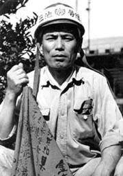

父ちゃんの死 ー ある三池労組闘士の場合
（聞き取り年月日場所：2008年6月8日 大牟田市）

飯尾忠之さん、現在68歳。そのお父さんの敏雄さんは大正6年生まれ。昭和19年に三井三池鉱業所三川鉱に
入り、昭和38年6月、45歳で亡くなるまで、三池労組の闘士だった。
朝、三番方の勤務を終えて帰宅し、いつものように就寝したが、起きる時間になっても起きてこないので、家族が見に行ったら死んで
いた。
「この頃は、争議が終わって第二組合へ移る仲間たちが多かったときで、父親自身も何度も第二組合に誘われたりして、その人間
関係で疲れ果てていた。そういう心労が重なっての病死だったのかも知れない」と、息子さんは語る。
職場においても、三池労組員に対する差別攻撃はひどかったらしい。ある時、父親が仕事から帰ってくるなり、弁当箱を玄関に叩き
つけていたことも度々あったという。
社宅も、父親が亡くなると「早く社宅から出て行ってほしい」と三井からせかされた。「父が三池労組員だったせいもあったのだろう」
と、息子さんは当時を振り返る。「それでも社宅で一年半頑張った」。
忘れられないのは父親の葬儀のときのこと。「飯尾さん、許してくれ」と、祭壇の前で泣き伏す亡父の友人がいた。「父と一番仲が良
かった人」だった。その人も新労へ行き、「何を今さら・・・」と息子さんはそのとき思ったという。また、葬儀には会社からも組合か
らも参列者はなかったとも。
忠之さんは5人きょうだい。弟さんは最後の鉱山学校の卒業生だったが、結局は炭鉱へは行かず、大阪の日立造船に就職。同じ働く者
同士が同じ職場で、第一と第二に分かれていがみ合う関係を心配した父親が、「炭鉱へは行くな」と進言したからだという。
しかし、そんな父親のお父さんもまた炭鉱夫だった。鹿児島県の最北端に位置する長島から長崎の口之津へ移住し、口之津港で石炭等
の荷揚げ作業に従事した。そして、明治41年、三池炭の積み出し港として三池港が開港されると、三池鉱業所の港務所に移った。その
祖父も70過ぎで昭和38年3月死去。さらに、その3ヵ月後、父親の敏雄さんが心労により45歳の若さで急死した。
そして、その死から5ヶ月後の11月9日、三川鉱で炭塵大爆発が起きた。「もし、父があのとき争議のゴタゴタで急死せず生きていたと
しても、三川坑内の爆発で死んでいたかもしれない。どちらにしても、父は早死にする運命だったんじゃないか」と、最後に息子さんが
語った。その言葉の意味は大きい。
BACK
|